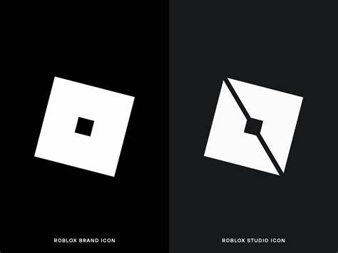

From Wikipedia,"Roblox (/ˈroʊblɒks/) is an online game platform and game creation system developed by Roblox Corporation that allows users to program games and play games created by other users. Created by David Baszucki and Erik Cassel in 2004 and released in 2006, the platform hosts user-created games of multiple genres coded in the programming language Lua. For most of Roblox's history, it was relatively small, both as a platform and as a company. Roblox began to grow rapidly in the second half of the 2010s, and this growth has been accelerated by the COVID-19 pandemic.[7][8] Roblox is free to play, with in-game purchases available through a virtual currency called Robux. As of August 2020, Roblox had over 164 million monthly active users, including more than half of all American children under 16.[9][10] Although Roblox has received generally positive reviews from critics, it has faced criticism for its moderation, microtransactions, and exploitative practices directed toward children."
And for Studio? Studio is where you make those games (with the coding language Lua{one of my favorites})
Some of the games that stand out are; Doors by LSPLASH, Royale High bt callmehbob, Rainbow Friends by Fragment Games, Build A Boat For Treasure by Chillz Studios, Apeirophobia by Poloroid Studios(Formerly Monochrome Studios), BIG Paintball by BIG Games, and many others. These games take time; lots of time, and they take effort, too. For example, Doors by LSPLASH took 3 years to make!
